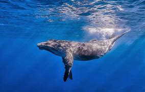
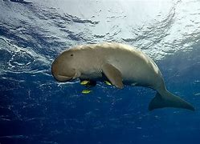
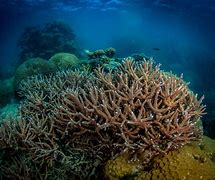
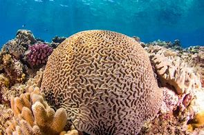
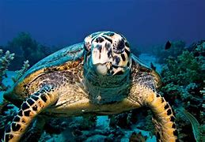
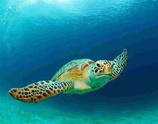
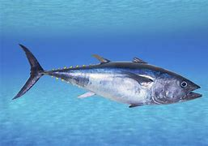
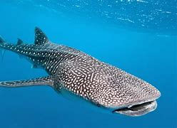

| Species | Conservation Status | Description | More Details | |
|---|---|---|---|---|
| Marine Mammals |
 Blue Whale |
⚠ Endangered | As the largest living being blue whales reach their maximum length at 30 meters. Ocean ecosystems benefit from their complex songs because blue whales act as essential managers of marine food systems. | Click to learn more about Marine mammals and how to help |
|
 Dugong |
⚠ Vulnerable | Often called "sea cows", dugongs are marine mammals that graze on seagrass in shallow coastal waters. They are closely related to manatees and play a vital role in maintaining seagrass ecosystems. | ||
| Coral Species |
 Staghorn Coral |
⚠ Critical | A branching coral that provides critical habitat for marine life. Its complex structure offers shelter to many fish species and helps protect coastlines from erosion. | Click to leran more about Corals and how to help |
|
 Brain Coral |
⚠ Threatened | Named for its distinctive wrinkled appearance resembling a human brain, brain corals are slow-growing and provide essential structure to coral reef ecosystems. | ||
| Sea Turtles |
 Hawksbill Turtle |
⚠ Critical | Known for their beautiful shells, hawksbill turtles play a crucial role in maintaining coral reef ecosystems by controlling sponge populations and supporting marine biodiversity. | Click to leran more about Turtles and how to help |
|
 Green Turtle |
⚠ Endangered | Green turtles are unique among sea turtles for their herbivorous diet, primarily feeding on seagrasses and algae. They are critical for maintaining healthy marine ecosystems. | ||
| Fish Species |
 Bluefin Tuna |
⚠ Endangered | One of the largest and most valuable fish species, bluefin tuna are apex predators that play a crucial role in marine food webs. They are highly migratory and highly prized in commercial fishing. | Click to leran more about the Fish species and how to help |
|
 Whale Shark |
⚠ Vulnerable | The largest fish in the world, whale sharks are gentle giants that filter feed on plankton. Despite their massive size, they pose no threat to humans and are crucial to marine ecosystem balance. | ||